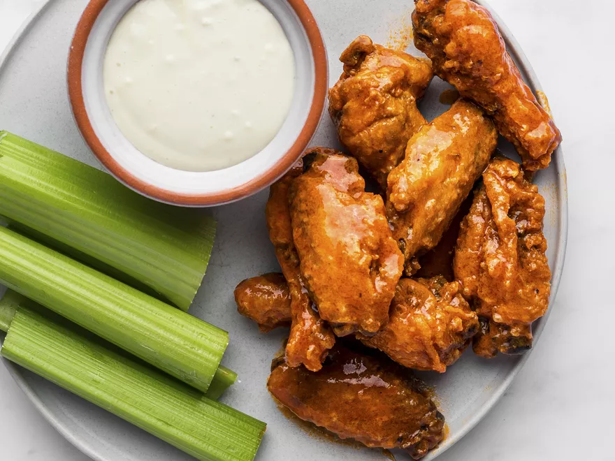

Chicken Wings

Description
This recipe is for a personal favourite of mine, Buffalo Chicken Wings, an easy to make treat!
Ingredients
- 2kg chicken wings
- Frank's Hot Sauce
- 1 tablespoon baking powder
- 1/2 teaspoon salt
- Pinch of pepper
- 2 teaspoons of garlic powder
- Pre-heat oven to 230°c
- Pat dry chicken wings with kitchen roll (paper towels) and remove excess moisture
- Mix baking powder, salt, pepper and garlic powder together
- Coat chicken wings in season baking powder
- Arrange on baking tray lined with foil and bake for 30 minutes
- Flip then continue to cook for 20-30 minutes, until golden and crispy
- Cover in sauce and enjoy!